OKEとWerckerによるCI/CD¶
このエントリーは、OKEとWerckerを利用したコンテナベースのCI/CD(Continous Integration/Delivery)を体験する、ハンズオンチュートリアルです。
このチュートリアルでは、簡単なサンプルアプリケーションを題材にKubernetesでアプリケーションを動作させる使用感や、Werckerと組み合わせたコンテナのビルド、テスト、デプロイ自動化を体験することができます。
このチュートリアルを実施するために必要な要件¶
- 事前作業
- 以下のチュートリアルのいずれかが実施済みであること
全体の流れ¶
- CI/CDパイプラインの作成
- CI/CDパイプラインによる、初期バージョンのデプロイ
- アプリケーションの更新とプルリクエストの発行
- 新バージョンの自動デプロイ
1 . CI/CDパイプラインの作成¶
ここから、Werckerのパイプラインを構成して、ソースコードのビルド、テスト、およびOKEクラスターへのデプロイを自動化していきます。
1.1 wrecker.ymlの作成¶
Werckerによる一連のCI/CDフローにおいて、最も小さな処理単位はStepです。各Stepにおいて、どのような処理を行うかは、wercker.ymlという構成ファイルで定義します。通常このwercker.ymlも、アプリケーションのコード同じコードリポジトリで管理します。
wercker.ymlについてもすでに作成済みのファイルがありますので、内容を確認してみます。
cat ./wercker.yml
1 2 3 4 5 6 7 8 9 10 11 12 13 14 15 16 17 18 19 20 21 22 23 24 25 26 27 28 29 30 31 32 33 34 35 36 37 38 39 40 41 42 43 44 45 46 47 48 49 50 51 52 53 54 55 56 57 58 59 60 61 62 63 64 65 66 67 68 | box: id: openjdk:8-jdk ports: - 8080 dev: steps: ...（中略)... build: steps: ...（中略)... integration-test: steps: - script: name: Run and IT code: | java -jar $WERCKER_ROOT/build/libs/cowweb-1.0.jar & sleep 5 ./gradlew --full-stacktrace -q --project-cache-dir=$WERCKER_CACHE_DIR integrationTest push-to-releases: steps: - internal/docker-push: username: $REGISTRY_USERNAME password: $REGISTRY_PASSWORD repository: iad.ocir.io/gse00014510/acme-web-app/cowweb tag: v1.0 ports: 8080 cmd: java -jar /pipeline/source/build/libs/cowweb-1.0.jar deploy-to-cluster: box: id: alpine cmd: /bin/sh steps: - kubectl: name: connection testing server: $KUBERNETES_MASTER token: $KUBERNETES_TOKEN insecure-skip-tls-verify: true command: get nodes - kubectl: name: delete objects server: $KUBERNETES_MASTER token: $KUBERNETES_TOKEN insecure-skip-tls-verify: true command: delete -f $WERCKER_ROOT/kubernetes/cowweb.yaml --namespace=$COWWEB_NAMESPACE - script: name: wait to delete resources code: sleep 20 - kubectl: name: create objects server: $KUBERNETES_MASTER token: $KUBERNETES_TOKEN insecure-skip-tls-verify: true command: create -f $WERCKER_ROOT/kubernetes/cowweb.yaml --namespace=$COWWEB_NAMESPACE - kubectl: name: get LoadBalancer public IP address server: $KUBERNETES_MASTER token: $KUBERNETES_TOKEN insecure-skip-tls-verify: true command: get service -o jsonpath='{.items[*].status.loadBalancer.ingress[*].ip}' --namespace=$COWWEB_NAMESPACE |
ここでは、記述内容の詳細については省略しますが、ポイントとしては以下のような点が挙げられます。
build、integration-testなどの最上位層の項目があり、その直下のSteps:に続く形で複数のStepが定義されている- 各Stepでは、一回のコマンド実行に相当する粒度の処理が定義されている（
javaやdocker pushなど） - 環境変数によって、可変な値を設定することができる（
$KUBERNETES_MASTERなど）
1.2. Werckerのアプリケーションの作成¶
Werckerは一つのコードリポジトリに対して、アプリケーションという単位を割り当て、その中でCI/CDの処理を定義していく構成になっています。ここでは、サンプルアプリケーションのCI/CDを行うアプリケーションを作成していきます。
まずは、Werckerにログインします。Werckerにアクセスし、表示されたログイン画面で、[LOGIN WITH GITHUB]をクリックします。
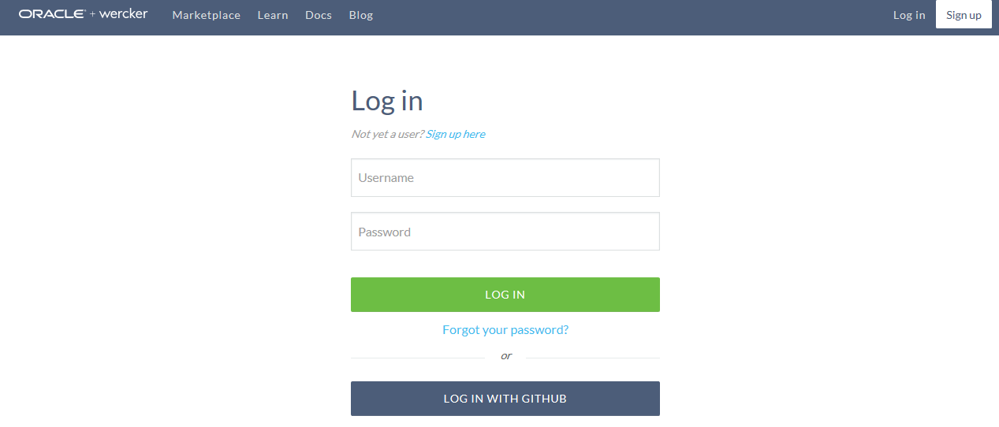
GitHubのログイン画面が表示されるので、ご自身のGitHubのアカウントでログインします。
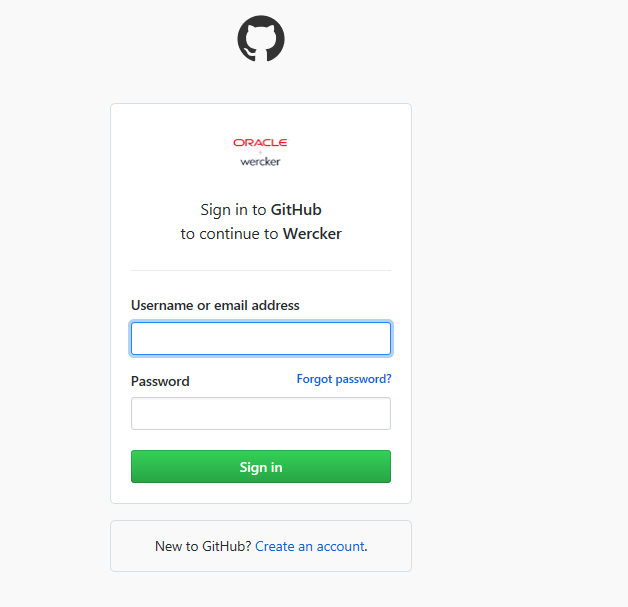
Werckerサイトへのログイン直後の画面で、[create your first application]ボタンをクリックします。
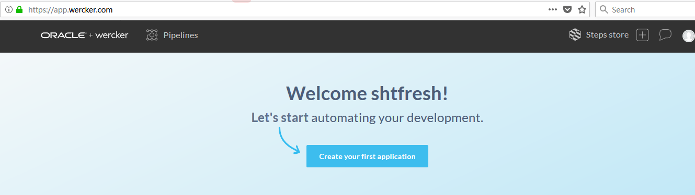
[1. Select a user from the dropdown to begin.]のメニューでは、ログインしたときのユーザーアカウントが選択されていることを確認します。[2. Select SCM]では、GitHubを選択します。
各項目を設定したら[Next]ボタンをクリックします。

[Select Repository]では、ログインに使用したGitHubアカウントのリポジトリが自動的に読み込まれ、表示されています。サンプルアプリケーションのリポジトリ(cowwweb-for-wercker-demo)を選択して、[Next]ボタンをクリックします。
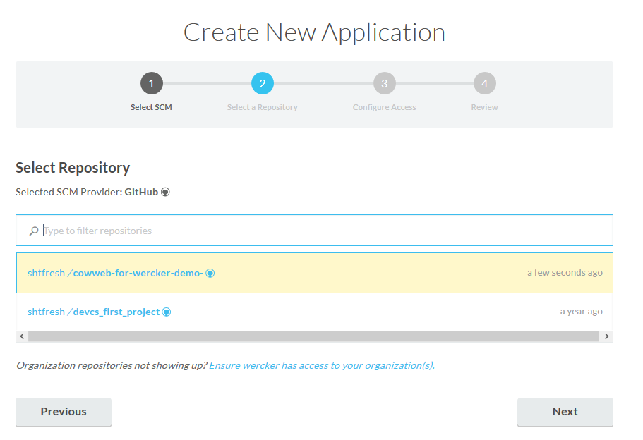
[Setup SSH key]では、[wercker will check out the code without using an SSH key]を選択して、Nextボタンをクリックする。
Note
この設定は、WerckerのサービスがGitHubからソースコードを取得する際の、通信経路のセキュリティを設定するものです。今回のハンズオンのような公開されたソースコードを利用するようなケースでは、デフォルトの設定で問題ありません。
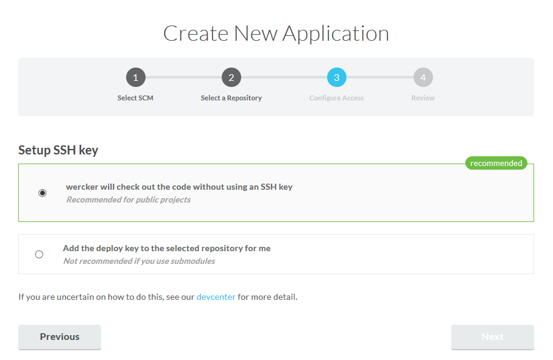
[Review]では、ここまでの手順で入力した内容を確認し、問題なければ[create]ボタンをクリックします。
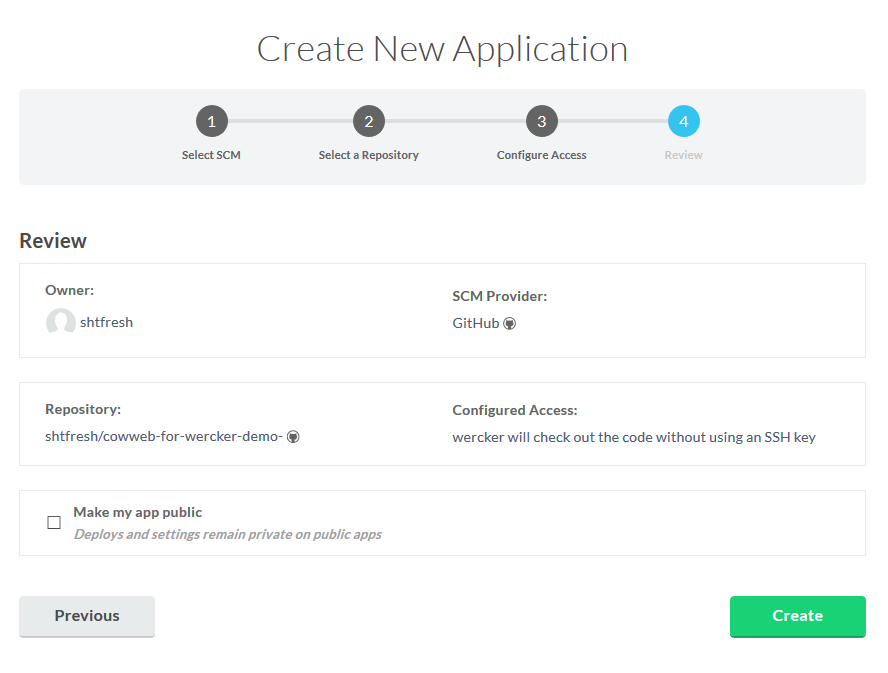
アプリケーションの作成が完了すると、[Runs]、[Workflows]といったタブが表示された画面に遷移します。
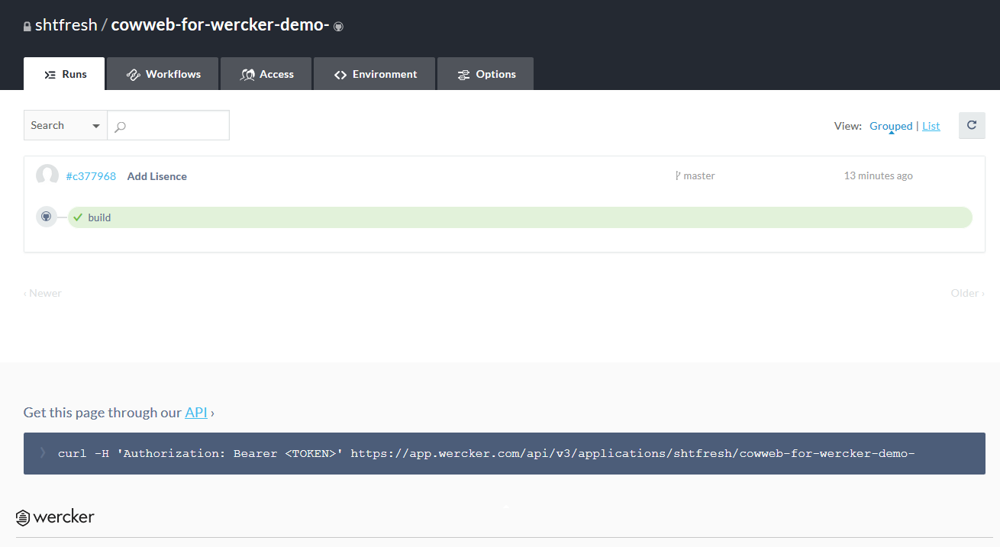
以上でWerckerのアプリケーションの作成は完了です。
1.3. Werckerのパイプラインの作成¶
パイプラインは、複数のStepの処理を意味のあるまとまりとして定義する単位です。
先に確認したwercker.ymlでは、build、integration-test、push-to-releases、deploy-to-clusterという4つのパイプラインが定義されていました。ここでは、これらの処理をWerckerのGUI上で、パイプラインとして読み込ませる操作を行います。
[Workflows]タブをクリックしてWorkflows作成画面を表示し、さらに画面下方にある[Add new pipeline]ボタンをクリックします。

[Create New Pipeline]の入力フォームでは、以下のように値を入力し[Create]ボタンをクリックします。
- Name: integration-test
- YML Pipeline name: integration-test
- Hook type: Default
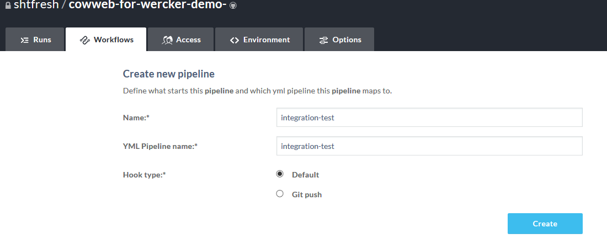
この手順を、push-to-releases、deploy-to-clusterについても繰り返します（NameとYML Pipeline nameの値が一致するように入力します）。
すべてのパイプラインを作成すると、[Pipelines]以下に、以下のような内容が表示されます。
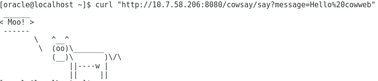
1.4. 作成したパイプラインをつかってワークフローを構成する¶
複数のワークフローをつなぎ合わせて、一連の処理の順序を構成したものがワークフローです。WerckerにおけるCI/CDの一回の処理は、ワークフローの先頭から終端までの実行に相当します。
それではワークフローの作成を行っていきます。
[Editor]内の[build]というパイプラインは、デフォルトで表示されています。その右端にある"+"のアイコンをクリックします。
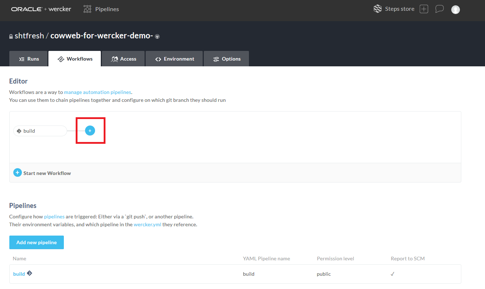
展開したメニューで以下のように値を入力します。
- On branch(es): master
- Not on branches(es): [空白のまま]
- Execute pipeline: push-to-releases

これはGitHubのmasterブランチが更新された時にwercker.yml中のpush-to-releasesパイプラインを実行することを意味します。wercker.ymlにおいてpush-to-releaseは、docker pushコマンドを実行するstepが定義されていました。つまり、このパイプラインによってコンテナイメージがレジストリにプッシュされることになります。
この時点で[Editor]の画面は以下のようになっています。
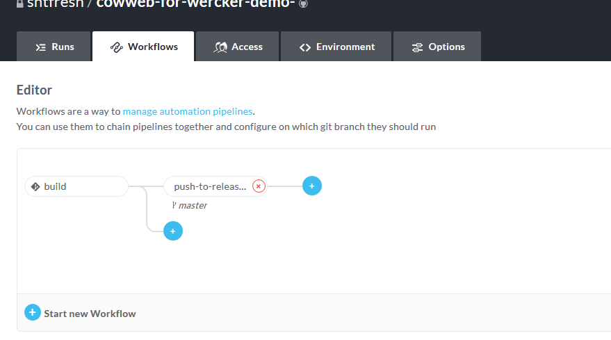
次に[push-to-release]の右端にある"+"のアイコンをクリックします。
展開したメニューで以下のように値を入力します。
- On branch(es): master
- Not on branches(es): [空白のまま]
- Execute pipeline: deploy-to-cluster
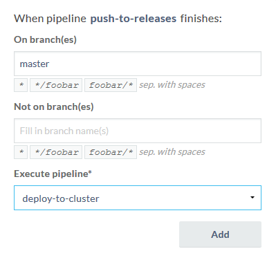
wercker.ymlにおいてdeploy-to-clusterは、kubectlの各種コマンドを実行する、複数のstepが定義されていました。このパイプラインでは、kubectlを使ってKubernetesクラスター内のコンテナを更新する処理を行っています。
ここまでの操作で、masterブランチが更新された時に、
- アプリケーションのビルド(
build) - コンテナイメージの、レジストリへのプッシュ(
push-to-releases) - kubernetesクラスターへのデプロイ(
deploy-to-cluster)
を行うワークフローを作成する事ができました。
さて、次にmasterブランチ以外が更新された時の分岐を定義します。今回はmasterブランチ以外が更新されたときを、何らかの機能の追加実装が行われたものと想定し、統合テストを実行することにします。
[Editor]において、[build]から枝分かれしている"+"アイコンをクリックします。
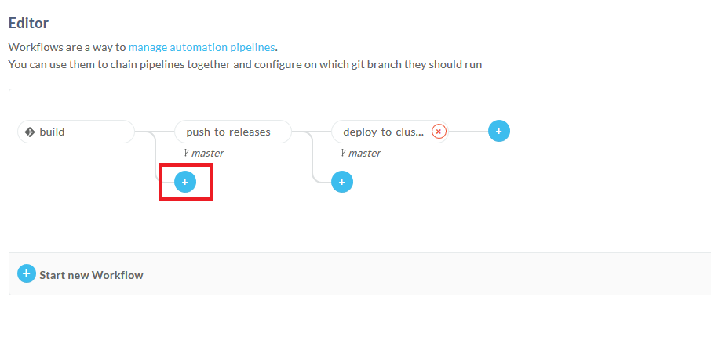
展開したメニューで以下のように値を入力します。
- On branch(es): [空白のまま]
- Not on branches(es): master
- Execute pipeline: integration-test
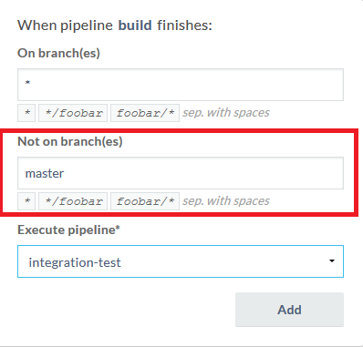
ここまでの操作が完了すると、[Editor]の表示内容は以下のようになっています。
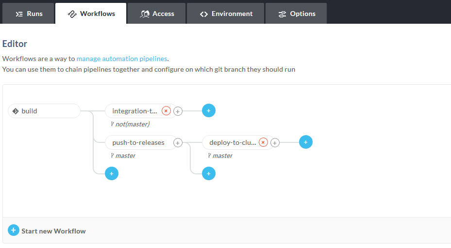
1.5. OKEにデプロイするための接続情報の設定¶
実際にOCIRへのコンテナイメージのプッシュや、OKEクラスターへのデプロイを行うには、それぞれの接続情報などの設定が必要です。wercker.ymlには、こういった情報は変数を使って記述しておき、実際の値はアプリーケーションの環境変数として設定することができます。
Werckerの画面の[Environmet]タブをクリックすると、この変数の値を設定する画面が表示されます。

OKEクラスターの認証情報等の入力が必要なため、以下のコマンドでkubectlが使っているクラスターへのアクセス情報を表示しておきます。
cat $HOME/.kube/config
Werckerの画面において、以下のようなKey/Valueの設定を行ってください。
| Key | Value | Protected | Valueの例 |
|---|---|---|---|
| KUBERNETES_MASTER | kubectlの設定値のclusters > cluster > serverの値 | OFF | https://c2gcmldmnsd.us-ashburn-1.clusters.oci.oraclecloud.com:6443 |
| KUBERNETES_TOKEN | kubectlの設定値のusers > user > tokenの値 | ON | eyJoZ...（中略）...W50In0= |
| COWWEB_NAMESPACE | 「3.4. OKEへのデプロイ」で指定したnamespace名 | OFF | - |
| REGISTRY_USERNAME | OCIRへのプッシュの際に指定したユーザー名 | OFF | tenant000123/userA |
| REGISTRY_PASSWORD | 「3.2. OCIRを利用するための事前準備」作成したトークン | ON | b4!@^-ji-aje#@&*-2a |
これで、CI/CDの処理の定義はすべて完了です。
2 . Werckerによる初期バージョンのデプロイ¶
2.1. wercker.ymlを更新とワークフローの実行¶
この時点のwercker.ymlの記述内容では、3.3. でdocker pushを実行したときとは異なるレジストリが指定されています。
ここでwercker.ymlを修正し、ワークフロー内で行われるコンテナのプッシュが、3.3. でのプッシュ先と同じ場所に対して行われるようにしておきます。
ブラウザでサンプルアプリケーションのGitHubリポジトリにアクセスし、画面中央のファイル／フォルダの一覧から、wercker.ymlを選択してください。
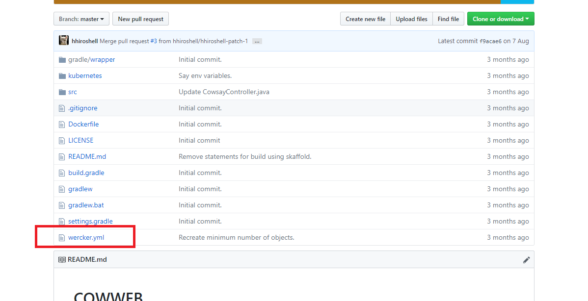
ファイルの内容が表示されている箇所の右上にある、ペン型アイコンをクリックすると、編集を開始することができます。
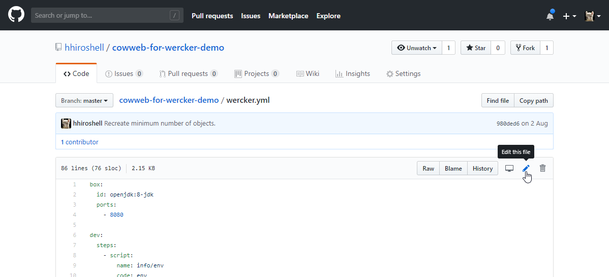
L45に記述されているイメージのプッシュ先を示す文字列を、3.3. でdocker push実行時に指定したものと同じ文字列に修正してください。

画面を最下部までスクロールすると[Commit Changes]フォームがあります。ここで適当なコミットコメントを記入し、[Commit directly to the master branch.]というラジオボタンを選択して[Propose file Change]ボタンをクリックします。

GitHubの画面はそのままにして、Werckerの画面を表示し、[Runs]タブをクリックしてください。
ここまでの手順でmasterブランチを更新していますので、Werckerのワークフローが自動で動き出していることが確認できます。正常に終了すればコンテナのプッシュ、OKEのデプロイまでが行われます。
ワークフローの実行結果から[deploy-to-cluster]をクリックすると、パイプライン内の処理の詳しい結果（標準出力の出力内容）を確認することができます。
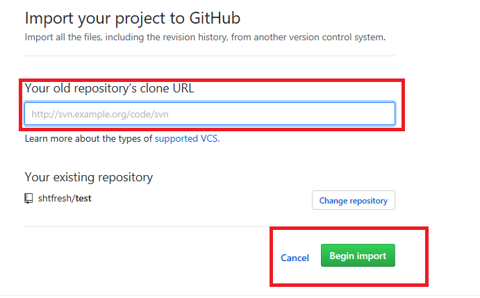
[get LoadBalancer public IP address]をさらにクリックすると、アプリーケーションへのトラフィックを受け付けるIPアドレスを確認することができます。

Note
IPアドレスの取得は、ワークフロー内で所定のkubectlコマンドを実行するようにwercker.ymlを記述することで実現しています。
これでWerckerのワークフローを使って、アプリーケーションをデプロイすることができました。
2.2. アプリケーションの動作確認¶
以下のコマンドを実行すると 3.4. で手動でデプロししたときと同じ結果が返されます。
curl "http://[マシンのIP]:[ServceのPort]/cowsay/say"
______ < Moo! > ------ \ ^__^ \ (oo)\_______ (__)\ )\/\ ||--WWW | || ||
3 . アプリケーションの更新とプルリクエストの発行¶
ここでは、実際のアプリケーションの開発場面を想定して、アプリケーションのソースコードの更新を行ってみます。
3.1. GitHub上でアプリケーションのコードを更新する¶
まず、ブラウザでGitHubのリポジトリにアクセスし、CowsayController.javaのソースコードを表示します。ファイル、フォルダの一覧が表示されている箇所を、src > main > java/com/oracle/jp/cowweb > CowsayController.javaの順にたどってください。
ファイルの内容が表示されている箇所の右上にある、ペン型アイコンをクリックすると、編集を開始することができます。

L24をコメントアウトし、L25-L32のコメントアウトを解除します。
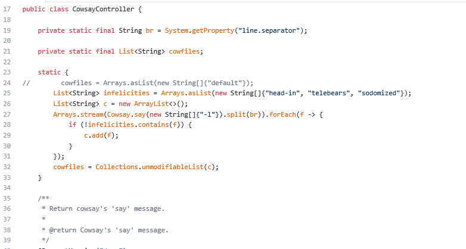
適当なコミットコメントを記入し、[Create a new branch...]というラジオボタンを選択して[Propose file Change]ボタンをクリックします。
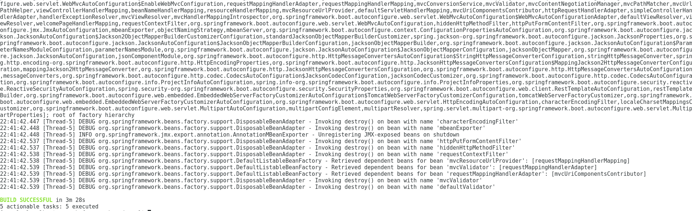
[Open a pull request]画面に遷移しますが、この画面はそのままにして、Werckerの画面を表示してください。
ソースコードの編集を行った時点で新たなブランチを作成しリポジトリを更新していますので、Werckerのワークフローが自動で動き出していることが確認できます。ここでは、master以外に新たにブランチを作成していますので、build > integration-test の流れが実行されています。
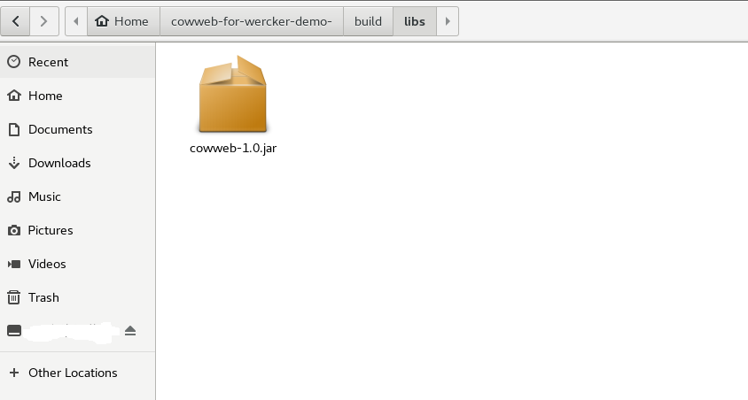
3.2. プルリクエストを発行する¶
それではGitHubにもどり[Open a pull request]画面で[Create pull request]ボタンをクリックしてください。

4 . 新バージョンの自動デプロイ¶
最後に7.2. で発行したプルリクエストをマージして、どのような結果になるか確認してみます。
4.1. プルリクエストをマージする¶
プルリクエストの内容が表示されているGitHubの画面で、適当なコメントを入力して[Comment]ボタンをクリックします。
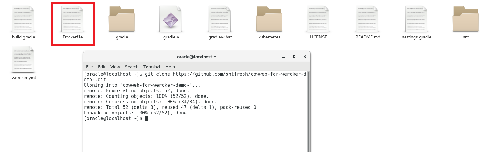
続いて、[Merge pull request]ボタンをクリックします。
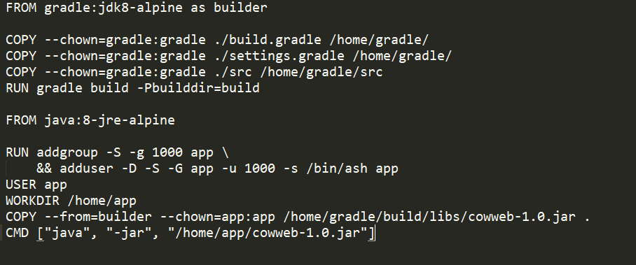
4.2. 自動でMasterのビルド、デプロイが実行されることを確認する¶
マージを行うと、masterとは別ブランチに行われたソースコードの変更が、masterブランチに反映されます。するとそれをきっかけにWerckerのワークフローが実行されます。
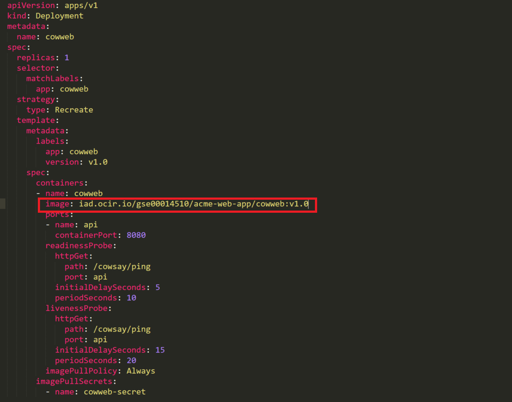
今回はmasterブランチの更新ですので、build > push-to-release > deploty-to-clusterの一連の処理が実行されます。結果として、変更が加えられたmasterのソースコードを元に自動的にビルド、プッシュ、デプロイされ、OKEクラスター上のコンテナが新しいバージョンに更新されることになります。
ワークフローが終了したら、先の手順と同じようにIPアドレスを確認してください。
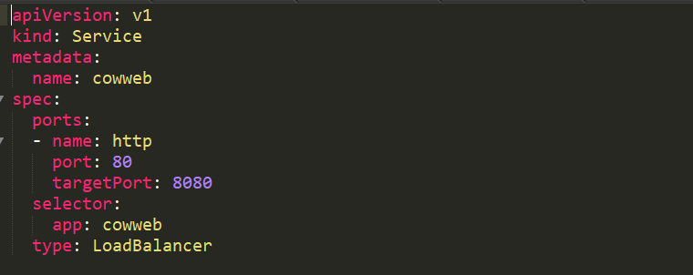
最後に、以下のコマンドを実行して、アプリケーションにアクセスしてみます。
curl "http://[マシンのIP]:[ServceのPort]/cowsay/say"
何度かコマンドを実行してみて、返される結果がどのように変わるか確認してみてください。 無事にアプリケーションは更新されているでしょうか。
以上でこのハンズオンチュートリアルの内容はすべて終了です。お疲れ様でした！